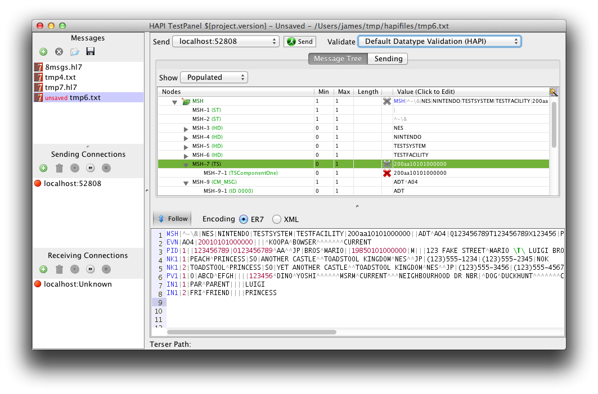
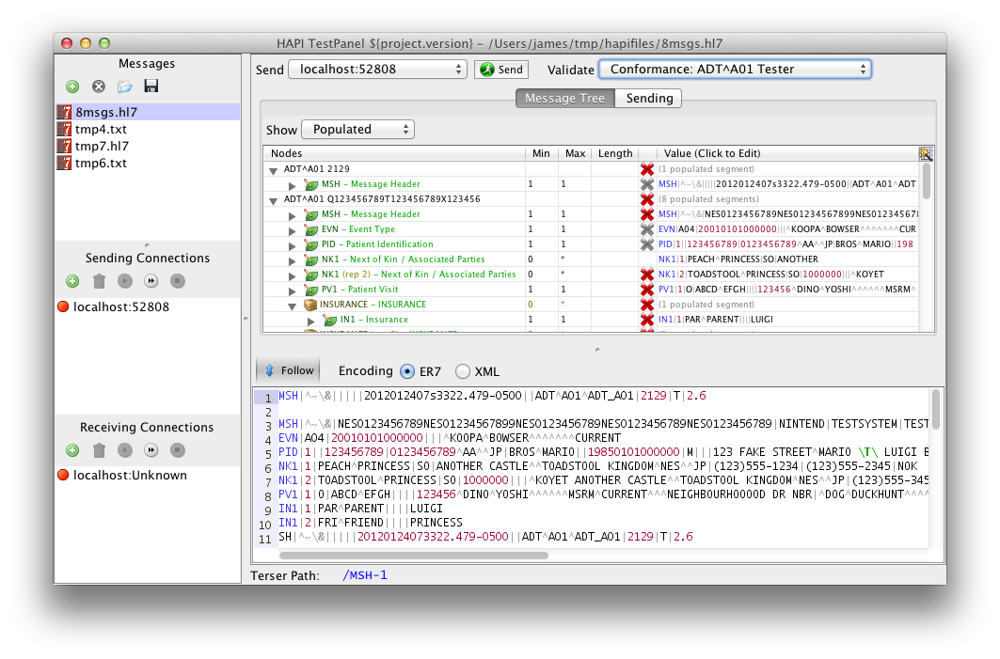

Message Validation
By default, TestPanel uses HAPI's built in validation, known as DefaultValidation . The validation performs basic data type checks, such as making sure that NM datatype fields do not contain text, TS datatype fields contain valid dates, etc.

To enable or disable this feature, click on the "Validate" selector, and choose either
"No Profile/Validation" or "Default HAPI Validation". When validation is enabled, you will
see any errors in the column to the left of the value column. You can test this out by
enabling validation and changing the MSH-7 (Timestamp) value so that it contains
letters within the timestamp. Hovering over the red "X" will give more information
about what is wrong.
Conformance Profiles
TestPanel supports validating messages using HL7 Conformance Profiles. Conformance profiles are special XML-based files which constrain the standard HL7 message definitions, allowing you to specify maximum field lengths, required cardinalities, etc.
Conformance profiles are generally created using a tool called Message Workbench (MWB), which is available here.
To create a conformance profile, use the MWB tool to create your profile, and then select "Export XML Profile" from the File menu to create an XML version which can be loaded into TestPanel.
In order to try out TestPanel's support, you can download a zipped profile for an ADT^A01 message here.
Creating a Profile Group
TestPanel arranges profiles in what it calls a "Profile Group". A profile group is a collection of one or more conformance profiles. Within a profile group, each profile is marked as applying to specific message types, so that for instance you could create a profile group with one profile for ADT^A01 messages and another profile for ORU^R01.

To create a profile group, choose "Profiles and Tables..." from the Conformance menu. This opens the profiles dialog.
- Click on "New Profile Group" to create a new profile group.
- Select the newly created group, and click on "Add Profile" to add a conformance profile to the group. The allows you to select an XML based conformance profile, and then assign it to one or more message types.
 To apply your new profile group to a message (or a collection of messages), open the messages in the main message editor, and choose your new profile group from the "Validate" picker, near the top right of the window.
If there are any problems with your message, you will now see them highlited. Try removing values, or putting in very long values to see new problems. If you can't see any errors, you might want to make sure that your profile group matches the message type of the message you are using. (e.g. ADT^A04 vs. ADT^A01)
Tables

TestPanel also allows you to define tables from which coded values are drawn. Tables are stored in table files, and a table file contains one ore more tables.
To create a table file, choose "Profiles and Tables..." from the Conformance menu, and navigate to the Tables tab. Click on "Add File" and create a new file.
Now, create a new table. HL7 tables are generally represented by four digits. For example, component 1 of a CE such as MSH-3 "Sending Application" is table 0300. To create a validation table, add the prefix HL7, as shown in the screenshot.
Once you have created your tables, return to the Profiles tab, and assign your table file to the Profile Group by clicking on the word "None" with the small circle next to it.